Lectures in this section
Migration tools sit at the ingest edge of the pipeline — most land in S3 or a database that downstream Glue and Redshift jobs consume. See also Section 7 (S3) and Section 21 (service decision tables).
- AWS Snow Family — offline data transfer ~10:00 Slides 645–650
- AWS Transfer Family — managed SFTP/FTPS/FTP ~5:00 Slides 651–653
- AWS DataSync — automated file and object sync ~7:00 Slides 654–657
- AWS DMS and Schema Conversion Tool ~10:00 Slides 658–662
- AWS Application Discovery Service ~3:00 Slides 663–664
- AWS Application Migration Service ~5:00 Slides 665–667
AWS Snow Family
The AWS Snow Family moves data physically when network transfer is too slow, too expensive, or unavailable. Devices are tamper-evident, encrypted with AWS KMS, and chain-of-custody tracked — you load data locally, ship the appliance back, and AWS uploads into S3 or Glacier.
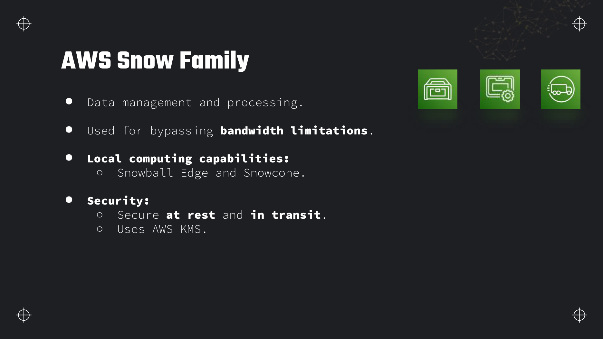
Snowcone
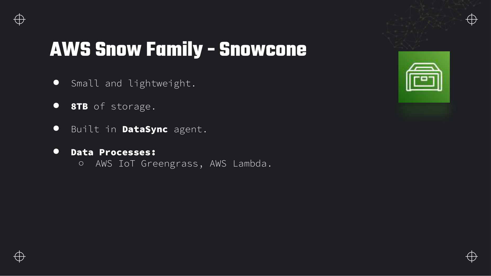
Snowball Edge
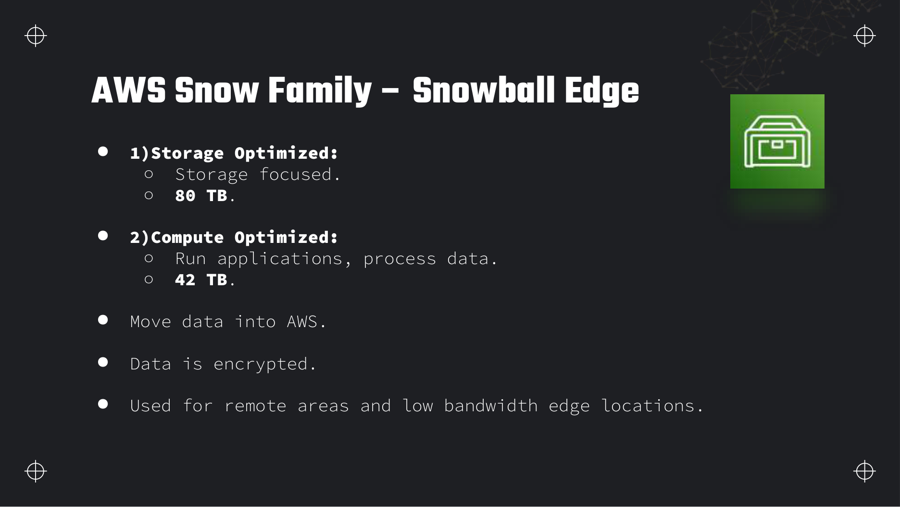
Snowmobile
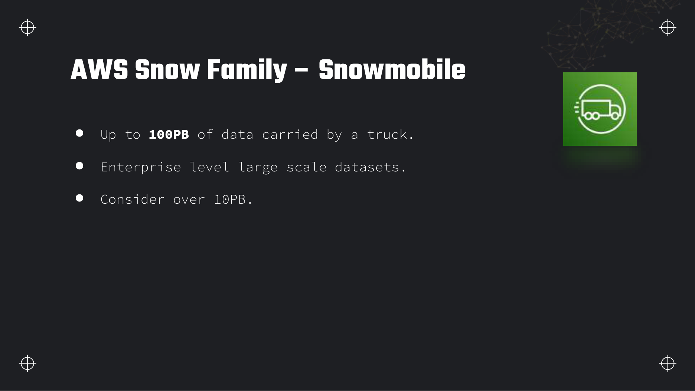
Ordering workflow and device comparison
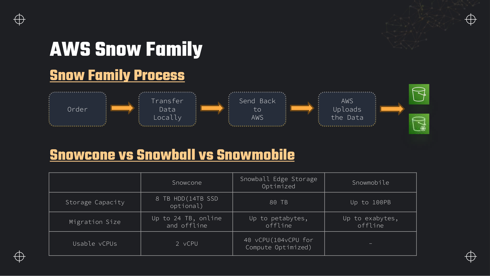
| Device | Usable storage | Migration scale | Compute | Typical trigger phrase |
|---|---|---|---|---|
| Snowcone | 8 TB HDD (14 TB SSD opt.) | Up to ~24 TB | 2 vCPU; Lambda, Greengrass | Remote edge site, small batch, optional online sync |
| Snowball Edge Storage Optimized | 80 TB | Petabytes (multiple jobs) | 40 vCPU | No reliable internet; TB-scale one-off |
| Snowball Edge Compute Optimized | 42 TB | Petabytes with local EC2 | Up to 104 vCPU | Preprocess at edge before cloud upload |
| Snowmobile | Up to 100 PB | Exabytes | N/A (storage focus) | Petabytes in weeks; >10 PB datacenter exit |
AWS Transfer Family
AWS Transfer Family provides fully managed SFTP, FTPS, FTP, and AS2 endpoints backed by Amazon S3 or Amazon EFS. Partners and legacy systems that already speak SFTP can keep their clients unchanged while files land directly in your data lake buckets.
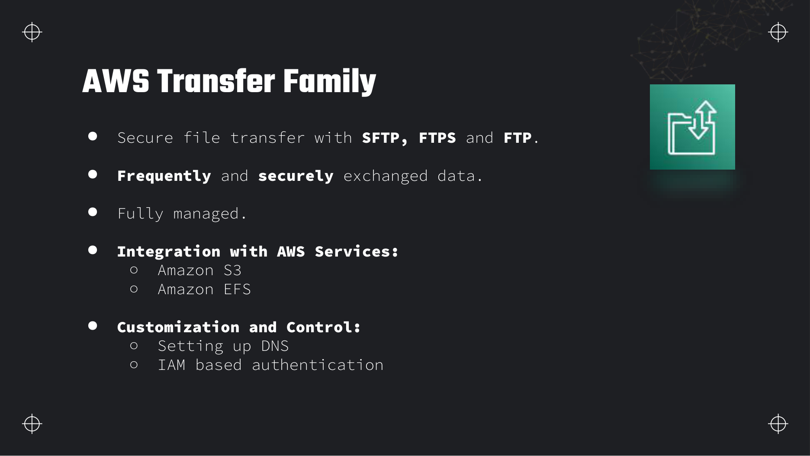
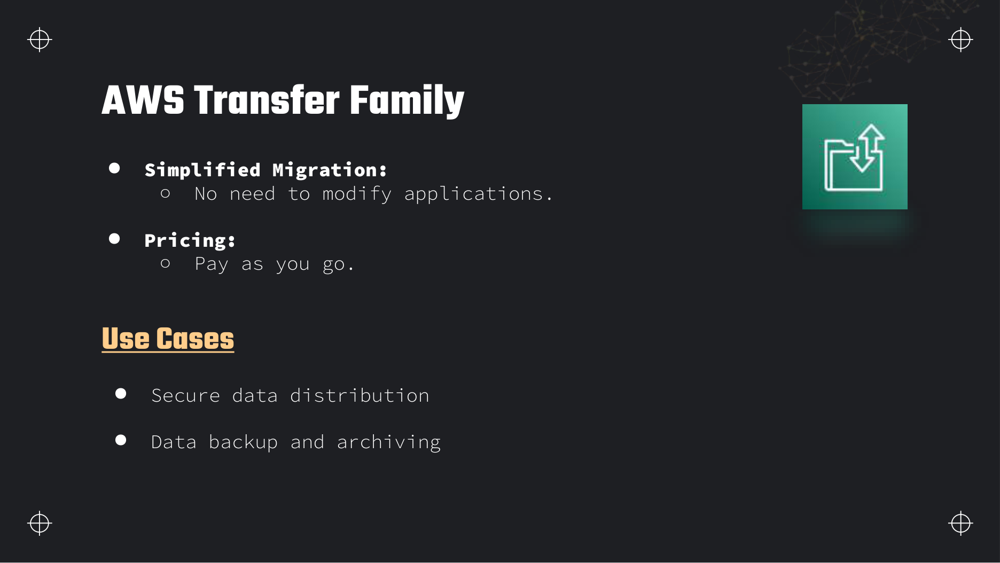
Identity providers and endpoint types
- Service-managed users — IAM-backed SFTP users with SSH keys stored in the service.
- Custom identity provider — API Gateway + Lambda validates credentials against Active Directory or an internal user store.
- Endpoint types — public (internet-facing), VPC (internal only), or VPC endpoint with PrivateLink.
AWS DataSync
AWS DataSync automates and accelerates online movement of file and object data between on-premises NFS/SMB shares, self-managed object storage, AWS Snow devices, and AWS targets (S3, EFS, FSx for Windows, ONTAP, OpenZFS). It preserves file permissions and metadata and runs up to 10× faster than open-source tools by using a dedicated network protocol and parallelised transfers.
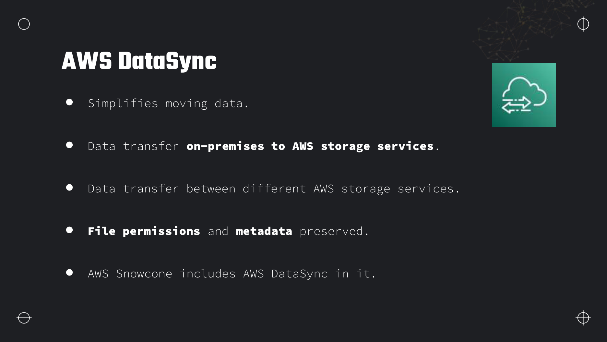
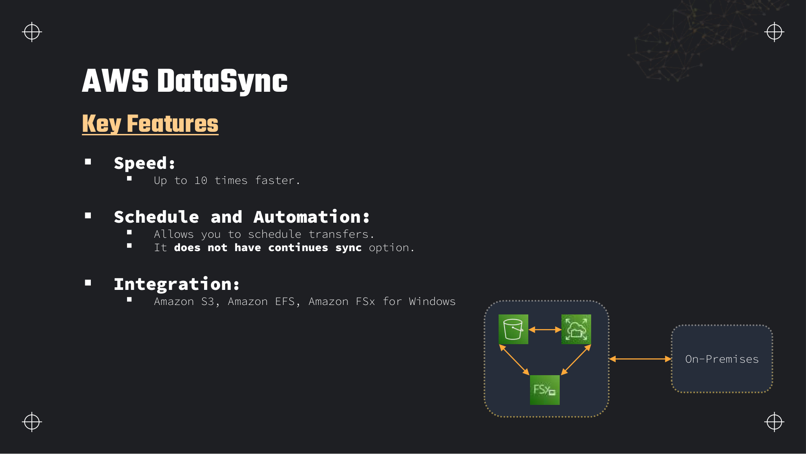
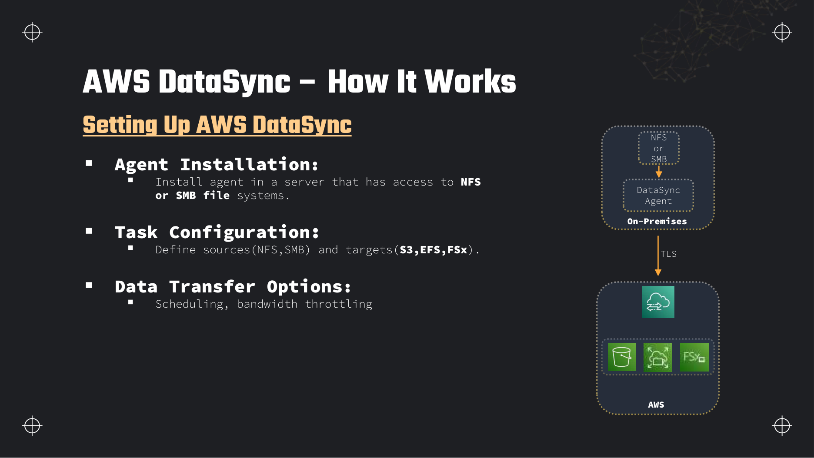
DataSync versus aws s3 sync
| Feature | AWS DataSync | aws s3 sync |
|---|---|---|
| Source | NFS, SMB, HDFS, object, Snow, S3, EFS, FSx | Local filesystem or S3 only |
| Performance | Parallel optimised protocol, ~10× vs tools like rsync | Single-threaded per process; you scale manually |
| Scheduling | Built-in cron schedules | Requires EventBridge + Lambda or cron on a host |
| Bandwidth control | Per-task throttling caps | No native throttle — can saturate links |
| Encryption in flight | TLS by default | HTTPS to S3 |
| Metadata | Preserves POSIX permissions, timestamps | Basic file metadata; no NFS ACL semantics |
| Cost | Per-GB transferred | Free tool; you pay S3 and egress only |
Supported source and destination pairs
- On-premises NFS / SMB → S3, EFS, FSx (Windows, ONTAP, OpenZFS)
- S3 ↔ S3 (cross-account, cross-region)
- EFS ↔ EFS, FSx ↔ FSx
- Snowcone / Snowball → S3 (via device agent)
# After creating source (NFS) and destination (S3) location ARNs:
aws datasync create-task \
--source-location-arn arn:aws:datasync:us-east-1:123456789012:location/loc-abc \
--destination-location-arn arn:aws:datasync:us-east-1:123456789012:location/loc-def \
--name nightly-raw-to-s3 \
--options VerifyMode=ONLY_FILES_TRANSFERRED,TransferMode=CHANGED \
--schedule ScheduleExpression="cron(0 2 * * ? *)" \
--includes '[{"FilterType":"SIMPLE_PATTERN","Value":"/data/raw/*"}]'
# Run immediately (outside schedule):
aws datasync start-task-execution --task-arn arn:aws:datasync:us-east-1:123456789012:task/task-abcAWS Database Migration Service
AWS Database Migration Service (DMS) replicates data from source databases to AWS or between AWS databases with minimal downtime. It runs on a replication instance (managed EC2) and supports homogeneous migrations (Oracle → Oracle) and heterogeneous ones (Oracle → Aurora PostgreSQL) with the Schema Conversion Tool (SCT).
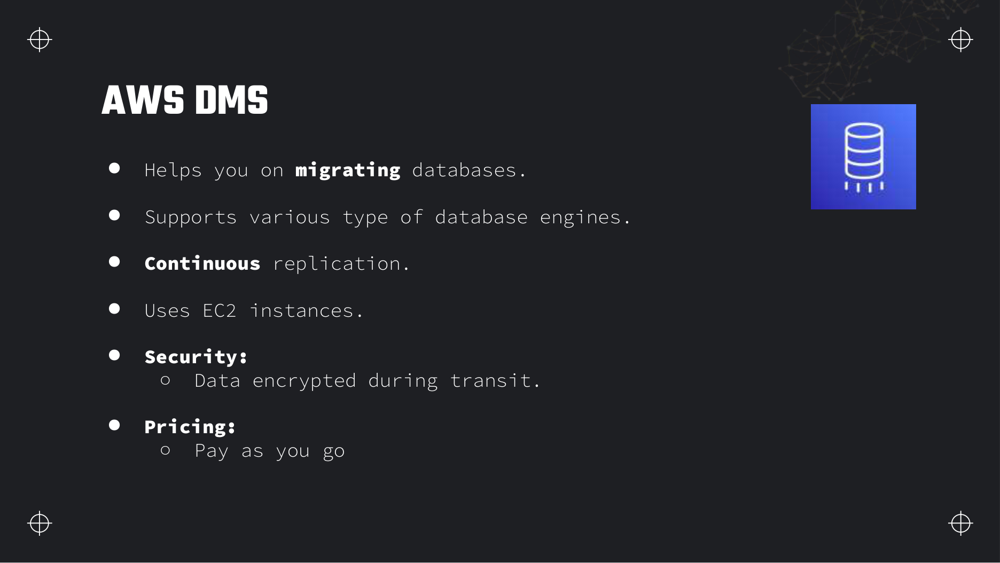
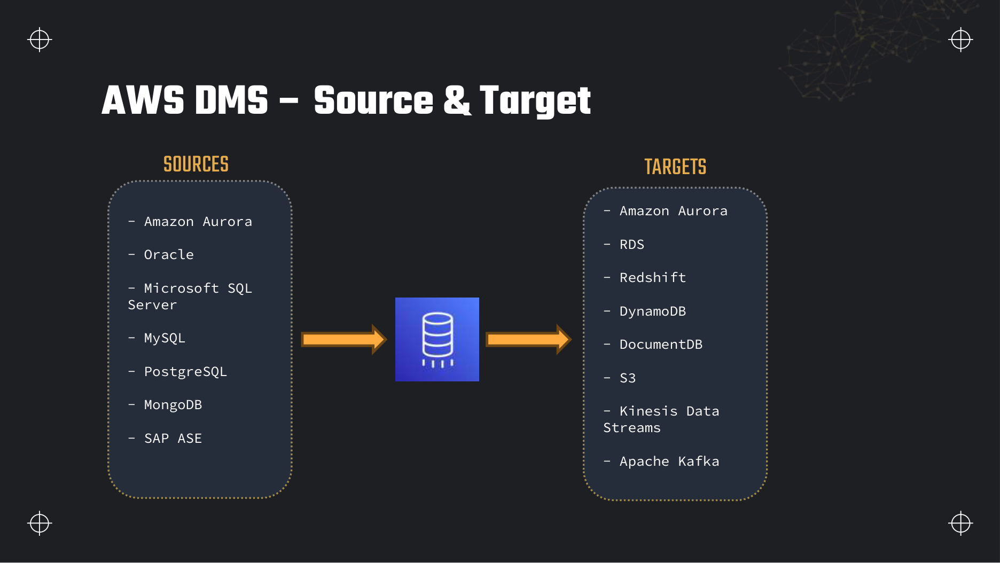
How DMS works — endpoints and replication tasks
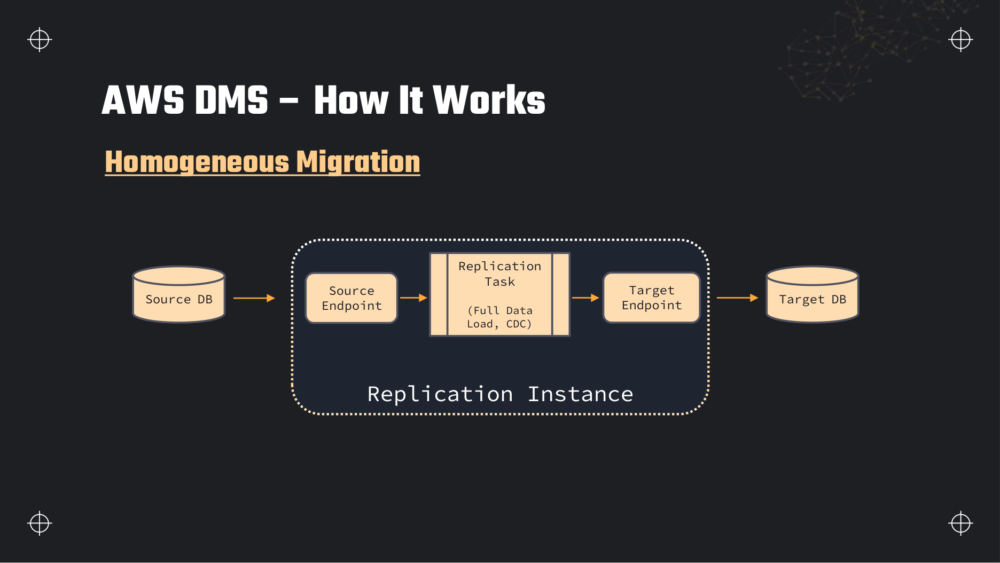
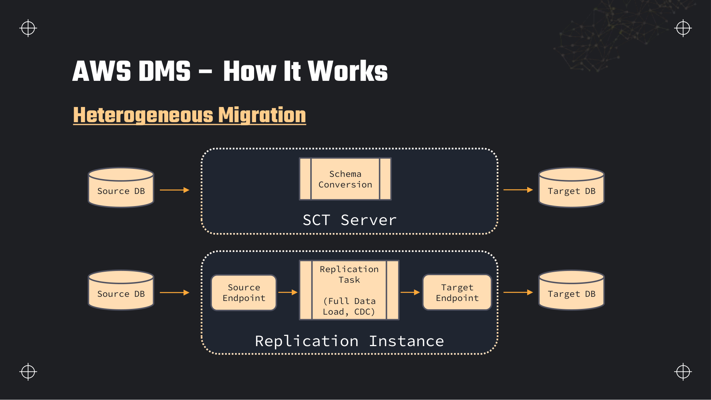
Migration types
| Type | What happens | When to use |
|---|---|---|
| Full load | One-time copy of all existing data | Static warehouses, initial bulk migrate, downtime acceptable during copy |
| CDC (Change Data Capture) | Ongoing replication of inserts/updates/deletes from transaction logs | Minimal downtime cutover — keep apps on source until flip |
| Full load + CDC | Bulk copy then switch to log tailing | Most production migrations — standard exam answer |
CDC prerequisites on the source
DMS reads changes from database transaction logs — not triggers. You must enable supplemental logging on the source:
- Oracle — supplemental logging, archive log mode.
- SQL Server — MS-CDC or MS-Replication enabled on published tables.
- MySQL / MariaDB — binary logging (
binlog) withbinlog_format=ROW. - PostgreSQL — logical replication or WAL settings per DMS docs.
Without log access, CDC tasks stall after full load. The exam may ask what to enable on MySQL for ongoing replication — answer binary logging (binlog).
LOB handling, validation, and premigration assessment
- LOB settings — large objects (BLOB/CLOB) can be migrated inline, limited-size, or in full LOB mode (slower but complete). Task settings JSON controls
"LobSettings"per table — inline for small LOBs, full for critical binary columns. - Validation — DMS can row-count and optionally hash/compare source vs target after full load. Enable in task settings; failures surface in CloudWatch.
- Premigration assessment — run before cutover to flag unsupported types, missing primary keys, and permission issues. Saves failed cutovers.
- DMS Serverless — auto-provisions replication capacity; pay for active migration time without sizing a replication instance upfront. Good for unpredictable or one-off heterogeneous moves.
{
"rules": [
{
"rule-type": "selection",
"rule-id": "1",
"rule-name": "include-sales-schema",
"object-locator": {
"schema-name": "SALES",
"table-name": "%"
},
"rule-action": "include"
},
{
"rule-type": "transformation",
"rule-id": "2",
"rule-name": "rename-schema-to-curated",
"rule-target": "schema",
"object-locator": {
"schema-name": "SALES"
},
"rule-action": "rename",
"value": "curated"
},
{
"rule-type": "transformation",
"rule-id": "3",
"rule-name": "add-ingest-timestamp",
"rule-target": "column",
"object-locator": {
"schema-name": "SALES",
"table-name": "ORDERS",
"column-name": "INGESTED_AT"
},
"rule-action": "add-column",
"value": "timestamp",
"expression": "$AR_H_TIMESTAMP"
}
]
}aws dms create-replication-task \
--replication-task-identifier prod-orders-to-aurora \
--source-endpoint-arn arn:aws:dms:us-east-1:123456789012:endpoint:SRC1 \
--target-endpoint-arn arn:aws:dms:us-east-1:123456789012:endpoint:TGT1 \
--replication-instance-arn arn:aws:dms:us-east-1:123456789012:rep:RI1 \
--migration-type full-load-and-cdc \
--table-mappings file://table-mapping.json \
--replication-task-settings file://task-settings.json
aws dms start-replication-task \
--replication-task-arn arn:aws:dms:us-east-1:123456789012:task:TASK1 \
--start-replication-task-type start-replicationAWS Application Discovery Service
AWS Application Discovery Service collects metadata about on-premises servers — specs, dependencies, utilization — so you can plan a migration before moving anything. Output feeds Migration Hub and Application Migration Service.
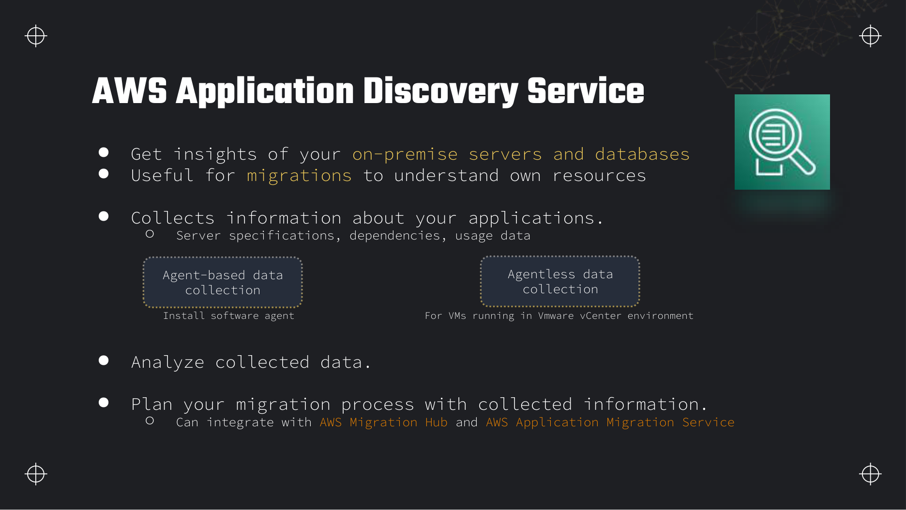
AWS Application Migration Service
AWS Application Migration Service (MGN) — formerly CloudEndure Migration — replicates entire servers into AWS for lift-and-shift with continuous block-level replication and non-disruptive test cutovers. It migrates applications and OS, not just files or database tables.
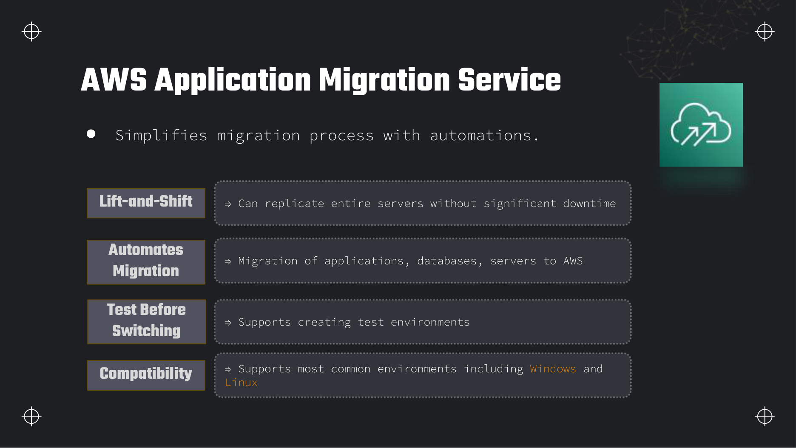
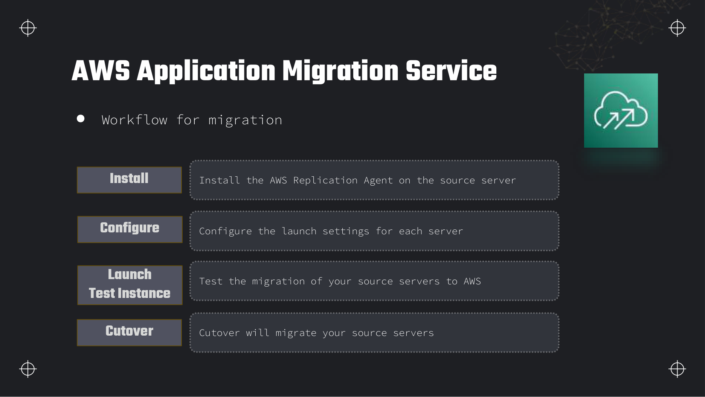
Choosing a migration service
Exam scenarios hinge on what is moving (files vs database vs whole server), how often (one-off vs ongoing), and network constraints. Use this table before picking an answer.
| Service | What moves | Pattern | Network | Trigger phrase in question |
|---|---|---|---|---|
| Snowball / Snowmobile | Files/objects (bulk) | One-off offline | No or insufficient internet | "No reliable internet"; "petabytes in weeks"; "80 TB datacenter exit" |
| DataSync | Files (NFS/SMB/HDFS) | Scheduled recurring sync | Online, bandwidth-limited OK | "Ongoing nightly sync from on-prem NFS"; "preserve file permissions" |
| Transfer Family | Files via SFTP/FTPS/FTP/AS2 | Ongoing partner drops | Online | "Existing SFTP clients"; "must not change the application" |
| DMS (+ SCT) | Database tables / CDC | Continuous replication | Online | "Minimal downtime"; "Oracle to Aurora"; "ongoing replication" |
| S3 Transfer Acceleration | Objects to S3 | One-off or ad hoc uploads | Online, long geographic distance | "Speed up uploads from distant clients over public internet to S3" |
| Direct Connect | Any (private link) | Persistent pipe | Dedicated private connectivity | "Consistent low-latency private link"; "bypass public internet" (not offline) |
| Application Migration (MGN) | Entire servers / VMs | Lift-and-shift with test cutover | Online replication | "Replicate whole application server"; "lift-and-shift VM" |
Migration paths into the data lake
Deeper detail and exam edge cases
Bandwidth-versus-time arithmetic for Snowball decisions, idle Transfer Family endpoints, DMS replication-instance storage failures, and the source-database prerequisites that silently break CDC after a successful full load.
Limits and quotas that decide answers
| Limit | Value | Adjustable? | Why it matters |
|---|---|---|---|
| Snowcone usable storage | 8 TB HDD (14 TB SSD option) | No — pick device type at order | Smallest offline appliance; built-in DataSync agent for hybrid online/offline. |
| Snowball Edge Storage Optimized usable | 80 TB per device | Order multiple devices for petabytes | Classic exam figure for "one appliance capacity" questions. |
| Snowmobile capacity | Up to 100 PB per truck load | N/A — engagement-based | Trigger when datacenter exit exceeds ~10 PB and network time is measured in years. |
| Snowball job retention (overdue device) | Per-day charge after included days | No — return device on schedule | Keeping an appliance past the allowed window adds daily fees on top of the job charge. |
| DMS replication instance storage | Allocated at create (e.g. 50–100 GB default on small classes) | Yes — increase allocated storage | Full load caches changes on the instance; running out of disk stalls or fails the task mid-migration. |
| DMS LOB inline mode | Truncates LOBs above inline limit | Configure LOB mode in task settings | Silent data loss on large BLOB/CLOB columns unless full LOB mode is enabled. |
| DMS CDC without primary key | Updates/deletes may not replicate correctly | Add PK or use supplemental logging workarounds | Tables without PKs are an exam gotcha for ongoing replication. |
| MySQL CDC prerequisite | binlog_format=ROW required | Yes — DBA config change | STATEMENT or MIXED binlog breaks row-level CDC; task stalls after full load. |
| Oracle CDC prerequisite | Supplemental logging enabled | Yes — DBA config | DMS reads redo/archive logs; without supplemental logging, changes are incomplete. |
| DataSync agent | Required for on-premises NFS/SMB sources | N/A — deploy VM or EC2 agent | No agent means no on-prem source — unlike aws s3 sync from a laptop. |
| Secrets Manager secret size (DMS endpoint creds) | 64 KB max | No (hard) | Large connection JSON or certs may need Parameter Store Advanced or S3 reference. |
| SCT scope | Heterogeneous migrations only | N/A | Oracle → PostgreSQL needs SCT; PostgreSQL → RDS PostgreSQL does not. |
What you actually pay for
| Billed dimension | Unit | How to spend less |
|---|---|---|
| Snowball / Snowcone job | Per-job fee plus per-day retention after included period | Load and return promptly; size jobs to fill device capacity; compute-optimized only when edge preprocessing is required. |
| Transfer Family endpoint | ~$0.30 per hour per protocol per AZ (SFTP) even when idle | Tear down dev endpoints; prefer S3 API or pre-signed URLs when partners can change clients. |
| Transfer Family data | Per GB uploaded/downloaded | Same as S3 PUT/GET underlying storage; compress before upload where possible. |
| DataSync | Per GB transferred (simple pricing, Region-dependent) | Schedule incremental syncs (TransferMode=CHANGED); throttle bandwidth to avoid saturating links; scope includes filters to skip cold paths. |
| DMS replication instance | Instance class per hour while running (e.g. dms.t3.medium ~$0.068/hr us-east-1) | Right-size instance; use DMS Serverless for short heterogeneous migrations; stop instance after cutover. |
| DMS Serverless | Capacity units while replication active | Good for unpredictable one-off migrations — no idle instance between phases. |
| S3 / network path | DataSync and DMS target writes bill S3 storage and possibly cross-AZ/Region transfer | Keep agent, replication instance, and bucket in the same Region; use Direct Connect for sustained large online migrations instead of repeated Snowball jobs. |
DROP_AND_CREATE or TRUNCATE target table preparation silently removes existing rows before full load. Validate mode in non-production first; enable DMS validation and compare row counts before cutover.Traps that catch people
- Bandwidth math ignored — Exam gives datacenter size, link speed, and deadline. If network transfer exceeds the window, Snowball wins even though DataSync is "online and managed". Work the arithmetic: TB ÷ Mbps × 8 ≈ seconds required.
- Idle Transfer Family endpoint — Teams create SFTP for a six-week migration and forget to delete it. Hourly endpoint charges continue indefinitely — unlike S3, which has no idle endpoint fee.
- DMS for files, DataSync for databases — Swapped answers are common distractors. DMS moves relational tables via CDC; DataSync moves NFS/SMB files.
- Full load success, CDC never starts — MySQL without ROW binlog or Oracle without supplemental logging. Full load completes; task then errors or stalls on CDC phase.
- Replication instance disk full — Large full load with many concurrent tables fills instance storage. CloudWatch
FreeStorageSpacedrops; task fails with storage errors — increase allocated storage proactively. - LOB truncation — Default inline LOB mode truncates large objects. Target looks healthy but binary columns are cropped — enable full LOB mode for critical BLOB tables.
- SCT on homogeneous migration — PostgreSQL to RDS PostgreSQL does not need Schema Conversion Tool. Adding SCT is wasted overhead unless engines differ.
- DataSync versus Storage Gateway — Storage Gateway is hybrid cache/volume access for on-prem apps treating AWS as local storage. DataSync is one-time or scheduled bulk copy — different use cases.
- Storage Gateway versus Transfer Family — Gateway serves iSCSI/NFS/file views; Transfer Family is protocol endpoint into S3/EFS for SFTP clients.
- MGN versus DMS — Application Migration replicates whole VMs block-level. DMS replicates database tables — not interchangeable for "lift-and-shift the Oracle server OS".
Troubleshooting playbook
| Symptom | Most likely cause | What to check / fix |
|---|---|---|
| DMS task failed after full load, CDC phase errors | Binlog/supplemental logging not enabled or wrong binlog format | MySQL: binlog_format=ROW, user REPLICATION privileges; Oracle: supplemental logging; run premigration assessment. |
High CDCLatencySource or CDCLatencyTarget | Undersized replication instance or network bottleneck | CloudWatch DMS metrics; scale instance class; check VPN/DX bandwidth; reduce parallel load threads if CPU-saturated. |
| DMS task status running but target row counts diverge | LOB truncation, missing PK on source table, or validation disabled | Enable validation in task settings; review LOB mode; premigration assessment for tables without PK. |
| DataSync task slow or failing verification | Agent undersized, bandwidth throttle too low, or VerifyMode mismatch | Agent EC2 instance size; BytesPerSecond in task options; try ONLY_FILES_TRANSFERRED vs POINT_IN_TIME_CONSISTENT. |
| DataSync cannot reach on-prem NFS | Agent not activated or firewall blocks TCP 443 to AWS | Agent activation code; security group on agent VM; test telnet to DataSync service endpoints. |
| Transfer Family auth succeeds but S3 object missing | Home directory mapping or IAM role scope wrong | User logical directory mapping; role policy s3:PutObject on intended prefix only. |
| Snowball import stuck after return | Import job error or KMS key policy blocking decrypt | Snowball console job status; CloudWatch Events; confirm KMS key allows Snowball service. |
| Snowball vs network — which is cheaper? | Exam scenario with fixed bandwidth and TB count | Calculate transfer days = (data TB × 8192) ÷ (link Mbps × 86400); compare to Snowball job fee + shipping time. |
Production patterns
Large replatforming projects combine tools by data shape. Phase 1: Snowball Edge for initial bulk file landing in S3. Phase 2: DMS full load + CDC for operational databases while apps stay on source. Phase 3: DataSync nightly delta for remaining NAS shares. Transfer Family stays only where SFTP partners cannot migrate.
Hybrid migration timeline — bulk offline then CDC online
Anti-pattern: running a dms.r5.xlarge replication instance 24/7 for months after cutover "just in case". After validation, stop the task and instance, or switch to native Aurora read replica logic. Idle DMS instances are pure hourly waste.
aws cloudwatch get-metric-statistics \
--namespace AWS/DMS \
--metric-name CDCLatencyTarget \
--dimensions Name=ReplicationInstanceIdentifier,Value=prod-replication \
--start-time 2026-08-03T00:00:00Z \
--end-time 2026-08-03T23:59:59Z \
--period 300 \
--statistics MaximumWhere this fits with the rest of the exam
Migration services sit at Domain 1 ingest edge — most targets are S3 or Aurora/RDS that downstream Glue and Redshift jobs consume.
- Landing zone: Section 7 — Snowball, DataSync, and Transfer Family all write S3 prefixes; lifecycle and encryption apply immediately.
- Database targets: Section 11 — DMS common targets Aurora, RDS, Redshift; SCT maps Oracle types to PostgreSQL.
- Streaming CDC alternative: Section 6 — DMS to Kinesis when the lake needs change feeds, not just RDS replica.
- Networking: Section 19 — DataSync agent and DMS replication instance need VPC placement, security groups, and routes to on-prem over VPN/DX.
- Credentials: Section 20 — DMS endpoints can pull database passwords from Secrets Manager.
- Decision tables: Section 21 — trigger phrases "minimal downtime", "NFS nightly", "existing SFTP", "no reliable internet".
Interview questions
Answer each one out loud before opening it.
When do you choose Snowball over DataSync?Comparison
Choose Snowball when network bandwidth makes online transfer impractical — no reliable internet, transfer would take months, or egress costs exceed appliance rental. Snowball Edge Storage Optimized holds 80 TB usable per device; order multiple for petabytes.
Choose DataSync when you have connectivity and want automated, scheduled sync of NFS/SMB shares to S3 with bandwidth throttling. DataSync is online; Snowball is offline-first (Snowcone excepted).
What is the difference between DMS and DataSync?Comparison
DMS replicates database tables using full load and/or CDC from transaction logs — targets include Aurora, Redshift, S3, Kinesis. DataSync moves files and objects between filesystems and S3/EFS/FSx with schedules and metadata preservation.
If the source is PostgreSQL and the target is Aurora with minimal downtime → DMS. If the source is an on-prem NFS share of CSV files → DataSync.
Why would a company use Transfer Family instead of giving partners S3 credentials?Design
Partners already run SFTP clients and scripts — Transfer Family lets them keep the same workflow while files land in S3. IAM-based SFTP users, custom identity providers, and VPC endpoints meet security requirements without rewriting integrations.
When partners can adopt S3 APIs or pre-signed URLs, Transfer Family's hourly endpoint cost makes plain S3 access cheaper. The exam uses "existing SFTP clients" as the discriminator for Transfer Family.
Explain full load, CDC, and full load + CDC in DMS.Fundamentals
Full load copies all existing rows once — simple but source may need to stay read-only or you accept inconsistency during copy. CDC tails the transaction log for ongoing changes only — requires binlog/supplemental logging enabled on the source.
Full load + CDC is the production pattern: bulk copy historical data, then seamlessly tail the log so the target stays current until cutover. Switch applications to the target when lag is near zero.
What must you enable on MySQL for DMS CDC?Gotcha
Enable the binary log (binlog) with binlog_format=ROW so DMS can read row-level changes. The replication user needs REPLICATION SLAVE and REPLICATION CLIENT privileges. Without binlog, only full load works — no ongoing replication.
Run premigration assessment to catch this before scheduling cutover.
When is the Schema Conversion Tool required?Exam
SCT is required for heterogeneous migrations where source and target engines differ — Oracle to PostgreSQL, SQL Server to Aurora MySQL, etc. It converts schemas, data types, views, and stored procedures that DMS cannot translate automatically.
Homogeneous migrations (PostgreSQL to RDS PostgreSQL) typically need only DMS endpoints and a replication task.
S3 Transfer Acceleration versus Direct Connect — what problem does each solve?Comparison
Transfer Acceleration routes HTTPS uploads through CloudFront edge locations to S3 — faster over long distances on the public internet. Pay per GB accelerated; enable per bucket.
Direct Connect is a dedicated private circuit from your datacenter to AWS — consistent latency and bandwidth, bypasses public internet entirely, but requires telco provisioning and monthly port fees. It is not a migration service by itself; DMS and DataSync run over it.
Application Discovery versus Application Migration — what is each for?Fundamentals
Application Discovery Service inventories on-premises servers (CPU, memory, dependencies, utilization) for planning — agent or agentless via vCenter. Output goes to Migration Hub.
Application Migration Service (MGN) executes lift-and-shift: continuous block-level replication of entire VMs, test launches in AWS, then cutover. Discovery plans; MGN moves.
How does DataSync differ from aws s3 sync for a nightly NFS-to-S3 pipeline?Performance
DataSync provides a dedicated agent, parallel transfer protocol (~10× faster than rsync-like tools), built-in scheduling, bandwidth throttling, TLS encryption, and POSIX metadata preservation. aws s3 sync is a CLI convenience — you host it, schedule it yourself, and it lacks NFS as a native source.
For recurring enterprise NFS → S3 with ops guardrails, DataSync is the managed answer; for ad hoc laptop uploads, aws s3 sync suffices.
Hands-on practice
Free tier where possible. Delete everything at the end of each task.
-
Create an S3 bucket and enable Transfer Acceleration. Upload
S3 → Bucket → Properties → Transfer Accelerationdata/customers.csvwith and without acceleration and compare upload time from your network (or note the accelerated endpoint URL format).Bucket shows Acceleration enabled; accelerated endpoint
bucket.s3-accelerate.amazonaws.comaccepts uploads.Show stepsConsole + CLI
BUCKET=dea-lab-ab-4821 aws s3api put-bucket-accelerate-configuration \ --bucket $BUCKET \ --accelerate-configuration Status=Enabled # Standard endpoint time aws s3 cp data/customers.csv s3://$BUCKET/raw/customers/std.csv # Accelerated endpoint time aws s3 cp data/customers.csv \ s3://$BUCKET/raw/customers/accel.csv \ --endpoint-url https://s3-accelerate.amazonaws.comCleanup: disable acceleration if not needed (no hourly fee, but per-GB accelerated pricing applies). Delete test objects.
-
In the DMS console, walk through creating a source endpoint (use a free RDS MySQL or skip create and review settings only), and inspect table-mapping and LOB settings on a sample replication task wizard.
DMS → Endpoints → Create endpointYou can explain full-load-and-cdc, where LOB mode is set, and what premigration assessment reports.
Show stepsConsole
- Open DMS → Endpoints → review engine options (MySQL, PostgreSQL, S3 as target).
- Start Create replication task → note migration types and table mapping JSON upload.
- Expand Task settings → LOB settings, validation, logging.
- Run Premigration assessment if endpoints exist.
A running replication instance bills ~0.034 USD/hour for dms.t3.micro — terminate after lab. DMS Serverless avoids idle instance cost for short tests.
-
Review DataSync pricing and create a task definition on paper: source NFS location, destination S3 location
DataSync → Tasks → Create tasks3://dea-lab-ab-4821/staging/, nightly schedule, 50 Mbps bandwidth cap.Written CLI or console steps specifying locations,
ScheduleExpression, andBytesPerSecondthrottle in task options.Show stepsCLI
Deploy the DataSync agent as an EC2 instance (requires a VPC — see Section 19). Agent activation produces an agent ARN.
# Throttle example in task options (bytes per second): # 50 Mbps ≈ 6250000 bytes/s aws datasync create-task \ --source-location-arn arn:aws:datasync:us-east-1:123456789012:location/nfs-src \ --destination-location-arn arn:aws:datasync:us-east-1:123456789012:location/s3-dst \ --name nightly-nfs-staging \ --schedule ScheduleExpression="cron(0 3 * * ? *)" \ --options BytesPerSecond=6250000,VerifyMode=POINT_IN_TIME_CONSISTENTCleanup: delete task and locations; terminate agent EC2. DataSync bills per GB transferred.
Recap
- Snow Family: offline when bandwidth fails — Snowcone (8 TB), Snowball Storage Optimized (80 TB usable), Snowmobile (100 PB). KMS, tamper-evident, order → load → return → S3 import.
- Transfer Family: managed SFTP/FTPS/FTP/AS2 → S3/EFS; wins when clients cannot change; hourly endpoint cost vs plain S3.
- DataSync: NFS/SMB → S3/EFS/FSx; scheduled sync, TLS, bandwidth throttle, ~10× faster; not continuous DB replication.
- DMS: database full load + CDC; replication instance, endpoints, tasks; enable binlog/supplemental logging for CDC.
- SCT: heterogeneous schema conversion before DMS data load.
- DMS Serverless, LOB settings, validation, premigration assessment — production extras the deck skips.
- Transfer Acceleration: faster public internet uploads to S3. Direct Connect: private dedicated link.
- Application Discovery = inventory/plan; Application Migration (MGN) = lift-and-shift VMs with test cutover.
- "Minimal downtime" + database → DMS. "Nightly NFS sync" → DataSync. "No reliable internet" → Snow. "Existing SFTP" → Transfer Family.